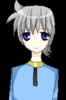
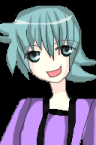
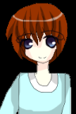
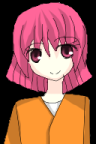
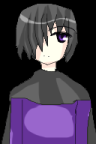
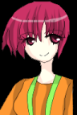
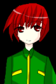
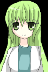

|
|
※イラストをクリックすることにより、それぞれのキャラクターの全身を見ることができます。
ご覧になりたいキャラクターをクリックしてください。
|  | 主人公:キャプ 男 年齢不明
記憶を全て失っている謎の男。
性格は優しめ、一人称は「ボク」。
多少気が弱いので、周りに振り回されること多し。 |
|  | ウルム＝シュターナイト 男 ２１歳
ナルシスト。ルックスはまあまあだが、
その性格のせいで全くモテないがその自覚は無い。
「ウータン」って言うとキレるが、本人曰く半分諦めているらしい。
どちらかといえばギャクキャラでありライバルっぽい人。
パワーキノコが死ぬほど嫌い。 |
|  | ライム 女 ２１歳
ガラー町の郊外に一人で住んでいる女性。
家があまりにも町から離れているのは、
街中が嫌いとか自然が好きとかではなく、ただ家を買うときに
不動産屋に騙されたらしい。
気は少し強めだが、なにかと世話焼きな所もある。
ただし、自分勝手な所も微妙にある。
マルーラという姉が中央市に住んでいる。 |
|  | アミエル 女 １９歳
ライムとは違った意味で活発。自己中だが性格は明るい。
ウータンに金儲けのいい話があると釣られてコロイド台地まで来た。
金銭欲が非常に強く、金絡みの話になると「うっふふ〜」と言う。
・好きなもの：金、バカで明るい人、パーティーグッツ。
・嫌いなもの：古いもの、イヤリング。
・趣味：トレジャーハント、株取引、天体観測。
一人称は「アタシ」。 |
|  | ゴトー 男 ２９歳
本編では選択肢によって仲間になる。
目を半分隠すような特殊な髪型をしており。
そのせいで不審者扱いされることも多い。
常にクールで、自分の感情を出すことは少ない。
過去に多くのことを抱えているようだが、本人はあまり語ろうとしない。 |
|  | マルーラ 女 ２６歳
ライムの実の姉。
中央市に住んでいるようである。 |
|  | ウェスト・レイモンド 女 ２３歳
ゴルドア帝国国家情報委員会対外諜報局第１部隊副部隊長。
９歳の時にレイモンド事件によって両親と兄を失う。
何事にも冷静だが、亡くなった両親や兄のことには感情的になる。 |
|  | シャルル 女 年齢不明
キャプの夢の中に現れる少女。
彼女が何者でキャプとどんな関係にあるのかは不明・・・。
※ちなみにシャルルのドット絵は万色の宙の管理人であるyuhiro様に描いていただきました！ |
|


{kind=link}
{kind=link}
{kind=link}
{kind=link}
{kind=link}
{kind=link}
{kind=link}
{kind=link}